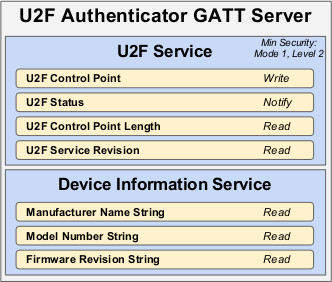

The FIDO U2F framework was designed to be able to support multiple
Authenticator form factors. This document describes the communication
protocol with Authenticators over Bluetooth Smart (referred to in this
document as Bluetooth Low Energy or BLE).
There are multiple form factors possible for Authenticators. Some
might be low cost, low power devices, and others might be implemented
as an additional feature of a more powerful device, such as a
smartphone. The design proposed here is meant to support multiple form
factors, including but not necessarily limited to these two
examples.
Status of This Document
This section describes the status of this document at the time of its publication.
Other documents may supersede this document. A list of current FIDO Alliance publications and the
latest revision of this technical report can be found in the FIDO Alliance specifications index at
https://www.fidoalliance.org/specifications/.
This document was published by the FIDO Alliance as a Review Draft.
This document is intended to become a FIDO Alliance Proposed Standard.
If you wish to make comments regarding this document, please
Contact Us.
All comments are welcome.
REVIEW DRAFT
This is a Review Draft Specification and
is not intended to be a basis for any implementations as the Specification may change. Permission is
hereby granted to use the Specification solely for the purpose of reviewing the Specification. No rights
are granted to prepare derivative works of this Specification. Entities seeking permission to reproduce
portions of this Specification for other uses must contact the FIDO Alliance to determine whether an
appropriate license for such use is available.
Implementation of certain elements of this Specification may require licenses under third party intellectual
property rights, including without limitation, patent rights. The FIDO Alliance, Inc. and its Members
and any other contributors to the Specification are not, and shall not be held, responsible in any manner
for identifying or failing to identify any or all such third party intellectual property rights.
THIS FIDO ALLIANCE SPECIFICATION IS PROVIDED “AS IS” AND WITHOUT ANY
WARRANTY OF ANY KIND, INCLUDING, WITHOUT LIMITATION, ANY EXPRESS OR IMPLIED
WARRANTY OF NON-INFRINGEMENT, MERCHANTABILITY OR FITNESS FOR A
PARTICULAR PURPOSE.
Type names, attribute names and element names are written as code.
String literals are enclosed in “”, e.g. “UAF-TLV”.
In formulas we use “|” to denote byte wise concatenation operations.
DOM APIs are described using the ECMAScript [ECMA-262] bindings for
WebIDL [WebIDL].
UAF specific terminology used in this document is defined in
[FIDOGlossary].
1.1 Key Words
The key words “MUST”, “MUST NOT”, “REQUIRED”, “SHALL”, “SHALL NOT”,
“SHOULD”, “SHOULD NOT”, “RECOMMENDED”, “MAY”, and “OPTIONAL” in this
document are to be interpreted as described in [RFC2119].
2. Conformance
Authenticator and Client devices using BLE SHALL conform to
Bluetooth Core Specification 4.0 or later [BTCORE]
Bluetooth(tm) SIG specified UUID values SHALL be found on the
Assigned Numbers website [BTASSNUM]
3. Pairing
BLE is a long-range wireless protocol and thus has several
implications for privacy, security, and overall user-experience.
Because it is wireless, BLE may be subject to monitoring, injection,
and other network-level attacks.
For these reasons, Clients and Authenticators MUST create and use a
long-term link key (LTK) and SHALL encrypt all communications.
Authenticator MUST never use short term keys.
Because BLE has poor ranging (i.e., there is no good
indication of proximity), it may not be clear to a FIDO Client with
which BLE Authenticator it should communicate. Pairing is the only
mechanism defined in this protocol to ensure that FIDO Clients are
interacting with the expected BLE Authenticator. As a result,
Authenticator manufacturers SHOULD instruct users to avoid performing
Bluetooth pairing in a public space such as a cafe, shop or train
station.
One disadvantage of using standard Bluetooth pairing is that the
pairing is "system-wide" on most operating systems. That is, if an
Authenticator is paired to a FIDO Client which resides on an operating
system where Bluetooth pairing is "system-wide", then any application
on that device might be able to interact with an Authenticator. This
issue is discussed further in Implementation Considerations.
4. Link Security
For BLE connections, the Authenticator SHALL enforce Security
Mode 1, Level 2 (unauthenticated pairing with encryption)
or Security Mode 1, Level 3 (authenticated pairing with
encryption) before any U2F messages are exchanged.
5. Framing
Conceptually, framing defines an encapsulation of U2F raw messages
responsible for correct transmission of a single request and its
response by the transport layer.
All requests and their responses are conceptually written as a single
frame. The format of the requests and responses is given first as
complete frames. Fragmentation is discussed next for each type of
transport layer.
5.1 Request from Client to Authenticator
Request frames must have the following format
Offset
Length
Mnemonic
Description
0
1
CMD
Command identifier
1
1
HLEN
High part of data length
2
1
LLEN
Low part of data length
3
s
DATA
Data (s is equal to the length)
Supported commands are PING and MSG.
The constant values for them are described below.
The data format for the MSG command is defined in
[U2FRawMsgs]. For the U2F over Bluetooth protocol, U2F raw
messages are encoded using extended length APDU encoding.
5.2 Response from Authenticator to Client
Response frames must have the following format, which share a
similar format to the request frames:
Offset
Length
Mnemonic
Description
0
1
STAT
Response status
1
1
HLEN
High part of data length
2
1
LLEN
Low part of data length
3
s
DATA
Data (s is equal to the length)
When the status byte in the response is the same as the command
byte in the request, the response is a successful response. The
value ERROR indicates an error, and the response data
contains an error code as a variable-length, big-endian integer. The
constant value for ERROR is described below.
Note that the errors sent in this response are errors at the
encapsulation layer, e.g., indicating an incorrectly
formatted request, or possibly an error communicating with the
Authenticator’s U2F message processing layer. Errors reported by the
U2F message processing layer itself are considered a success from
the encapsulation layer’s point of view, and are reported as a
complete MSG response.
Data format is defined in [U2FRawMsgs]. Note that as per
[U2FRawMsgs] (and unlike the NFC transport specification), all
communication SHALL be done using extended length APDU format.
5.3 Command, Status, and Error constants
The COMMAND constants and values are:
Command Constant
Value
PING
0x81
KEEPALIVE
0x82
MSG
0x83
ERROR
0xbf
The KEEPALIVE command contains a single byte with the following
possible values:
Status Constant
Value
PROCESSING
0x01
TUP_NEEDED
0x02
RFU
0x00, 0x03-0xFF
The ERROR constants and values are:
Error Constant
Value
Meaning
ERR_INVALID_CMD
0x01
The command in the request is unknown/invalid
ERR_INVALID_PAR
0x02
The parameter(s) of the command is/are invalid or missing
ERR_INVALID_LEN
0x03
The length of the request is invalid
ERR_INVALID_SEQ
0x04
The sequence number is invalid
ERR_REQ_TIMEOUT
0x05
The request timed out
NA
0x06
Value reserved (HID)
NA
0x0a
Value reserved (HID)
NA
0x0b
Value reserved (HID)
ERR_OTHER
0x7f
Other, unspecified error
6. GATT Service Description
This profile defines two roles: FIDO Authenticator and FIDO Client.
The FIDO Client shall be a GATT Client
The FIDO Authenticator shall be a GATT Server
The following figure illustrates the
mandatory services and characteristics that SHALL be offered by a
FIDO Authenticator as part of its GATT server:

Fig. 1
Mandatory GATT services and characteristics that MUST be offered by a FIDO
Authenticator. Note that the Generic Access Service (GAS) is not present as
it is already mandatory for any BLE compliant device.
The table below summarizes additional GATT sub-procedure
requirements for a FIDO Authenticator (GATT Server) beyond those
required by all GATT Servers.
GATT Sub-Procedure
Requirements
Write Characteristic Value
Mandatory
Notifications
Mandatory
Read Characteristic Descriptors
Mandatory
Write Characteristic Descriptors
Mandatory
The table below summarizes additional GATT sub-procedure requirements
for a FIDO Client (GATT Client) beyond those required by all GATT Clients.
GATT Sub-Procedure
Requirements
Discover All Primary Services
(*)
Discover Primary Services by Service UUID
(*)
Discover All Characteristics of a Service
(**)
Discover Characteristics by UUID
(**)
Discover All Characteristic Descriptors
Mandatory
Read Characteristic Value
Mandatory
Write Characteristic Value
Mandatory
Notification
Mandatory
Read Characteristic Descriptors
Mandatory
Write Characteristic Descriptors
Mandatory
(*): Mandatory to support at least one of these sub-procedures.
(**): Mandatory to support at least one of these sub-procedures.
Other GATT sub-procedures may be used if supported by both client
and server.
Specifics of each service are explained below. In the following
descriptions: all values are big-endian coded, all strings are in
UTF-8 encoding, and any characteristics not mentioned explicitly are
optional.
6.1 U2F Service
An Authenticator SHALL implement the U2F Service described below.
The UUID for the FIDO U2F GATT service is 0xFFFD, it shall be declared as a Primary Service.
The service contains the following characteristics:
Characteristic Name
Mnemonic
Property
Length
UUID
U2F Control Point
u2fControlPoint
Write
Defined by Vendor (20-512 bytes)
F1D0FFF1-DEAA-ECEE-B42F-C9BA7ED623BB
U2F Status
u2fStatus
Notify
N/A
F1D0FFF2-DEAA-ECEE-B42F-C9BA7ED623BB
U2F Control Point Length
u2fControlPointLength
Read
2 bytes
F1D0FFF3-DEAA-ECEE-B42F-C9BA7ED623BB
U2F Service Revision
u2fServiceRevision
Read
Defined by Vendor (20-512 bytes)
0x2A28
U2F Service Revision Bitfield
u2fServiceRevisionBitfield
Read/Write
See below, at least 1 byte
F1D0FFF4-DEAA-ECEE-B42F-C9BA7ED623BB
u2fControlPoint is a write-only command buffer.
u2fStatus is a notify-only response attribute.
The Authenticator will send a series of notifications on this attribute
with a maximum length of (ATT_MTU-3) using the response frames defined
above. This mechanism is used because this results in a faster transfer
speed compared to a notify-read combination.
u2fControlPointLength defines the maximum size in
bytes of a single write request to u2fControlPoint.
This value SHALL be between 20 and 512.
u2fServiceRevision defines the revision of the U2F Service.
The value is a UTF-8 string. For version 1.0 of the specification,
the value u2fServiceRevisionSHALL be 1.0 or in
raw bytes: 0x312e30. This field SHALL be omitted if protocol
version 1.0 is not supported.
u2fServiceRevisionBitfield defines the revision of the U2F
Service. The value is a bit field. Each bit represents the Authenticator's
support of a particular protocol version. A bit value of 1 indicates
support, while value 0 indicates lack of support. The length of the bitfield
is 1 or more bytes. All bytes that are 0 are omitted if all the following
bytes are 0 too. The bit field is big endian encoded with the most significant
bit representing version 1.1 support, the next most significant bit,
representing the next protocol version, etc. If only version 1.0 is supported,
this characteristic SHALL be omitted. If the u2fServiceRevision characteristic
is present or more than 1 bit in this u2fServiceRevisionBitfield characteristic
is 1, the client SHALL write the value of the requested protocol version to
be used for the lifetime of this connection. If u2fServiceRevision
characteristic is not present and only one bit in u2fServiceRevisionBitfield
is set, the version that bit represents SHALL be the default.
Byte (left to right)
Bit
Version
0
7
1.1
For example, a device that only supports 1.1 will only have a u2fServiceRevisionBitfield
characteristic of length 1 with value 0x80.
The u2fServiceRevision Characteristic MAY include
a Characteristic Presentation Format descriptor with format value
0x19, UTF-8 String.
6.2 Device Information Service
An Authenticator SHALL implement the Device Information Service
[BTDIS] with the following characteristics:
Manufacturer Name String
Model Number String
Firmware Revision String
All values for the Device Information Service are left to the
vendors. However, vendors should not create uniquely identifiable
values so that Authenticators do not become a method of tracking
users.
6.3 Generic Access Service
Every Authenticator SHALL implement the Generic Access Service [BTGAS] with the following characteristics:
Device Name
Appearance
7. Protocol Overview
The general overview of the communication protocol follows:
Authenticator advertises the FIDO U2F service.
Client scans for Authenticator advertising the FIDO U2F
service.
Client performs characteristic discovery on the Authenticator.
If not already paired, the Client and Authenticator SHALL
perform BLE pairing and create a LTK. Authenticator SHALL only
allow connections from previously bonded Clients without user
intervention.
Client reads the u2fControlPointLength characteristic.
Client registers for notifications on the u2fStatus
characteristic.
Client writes a request (e.g., an enroll request) into
the u2fControlPoint characteristic.
Authenticator evaluates the request and responds by sending
notifications over u2fStatus characteristic.
The protocol completes when either:
The Client unregisters for notifications on the
u2fStatus characteristic, or:
The connection times out and is closed by the
Authenticator.
8. Authenticator Advertising Format
When advertising, the Authenticator SHALL advertise the FIDO U2F
service UUID.
When advertising, the Authenticator MAY include the TxPower value
in the advertisement (see [BTXPLAD]).
When advertising in pairing mode, the Authenticator SHALL either:
(1) set the LE Limited Mode bit to zero and the LE General Discoverable
bit to one OR (2) set the LE Limited Mode bit to one and the LE General
Discoverable bit to zero. When advertising in non-pairing mode,
the Authenticator SHALL set both the LE Limited Mode bit and the LE
General Discoverable Mode bit to zero in the Advertising Data Flags.
The advertisement MAY also carry a device name which is
distinctive and user-identifiable. For example, "ACME Key" would
be an appropriate name, while "XJS4" would not be.
The Authenticator SHALL also implement the Generic Access Profile
[BTGAP] and Device Information Service
[BTDIS], both of which also provide a user friendly
name for the device which could be used by the Client. The BTDIS SHALL
contain the PnP ID field [BTPNPID].
It is not specified when or how often an Authenticator should
advertise, instead that flexibility is left to manufacturers.
9. Requests
Clients SHOULD make requests by connecting to the Authenticator
and performing a write into the u2fControlPoint
characteristic.
10. Responses
Authenticators SHOULD respond to Clients by sending notifications
on the u2fStatus characteristic.
Some Authenticators might alert users or prompt them to complete the
test of user presence (e.g., via sound, light, vibration)
Upon receiving any request, the Authenticators SHALL send
KEEPALIVE commands every kKeepAliveMillis
milliseconds until completing processing the commands. While the
Authenticator is processing the request the KEEPALIVE command will
contain status PROCESSING. If the Authenticator is
waiting to complete the Test of User Presence, the KEEPALIVE command
will contains status TUP_NEEDED. While waiting to
complete the Test of User Presence, the Authenticator MAY alert the
user (e.g., by flashing) in order to prompt the user to complete the
test of user presence.
As soon the Authenticator has completed processing and confirmed
user presence, it SHALL stop sending KEEPALIVE commands, and send the
reply.
Upon receiving a KEEPALIVE command, the Client SHALL assume the
Authenticator is still processing the command; the Client SHALL not
resend the command. The Authenticator SHALL continue sending
KEEPALIVE messages at least every kKeepAliveMillis
to indicate that it is still handling the request. Until a
client-defined timeout occurs, the Client SHALL NOT move on to other
devices when it receives a KEEPALIVE with TUP_NEEDED
status, as it knows this is a device that can satisfy its request.
11. Framing fragmentation
A single request/response sent over BLE MAY be split over multiple
writes and notifications, due to the inherent limitations of BLE
which is not currently meant for large messages. Frames are
fragmented in the following way:
A frame is divided into an initialization fragment and
one or more continuation fragments.
An initialization fragment is defined as:
Offset
Length
Mnemonic
Description
0
1
CMD
Command identifier
1
1
HLEN
High part of data length
2
1
LLEN
Low part of data length
3
0 to (maxLen - 3)
DATA
Data
where maxLen is the maximum packet size supported by
the characteristic or notification.
In other words, the start of an initialization fragment is
indicated by setting the high bit in the first byte. The subsequent
two bytes indicate the total length of the frame, in big-endian
order. The first maxLen - 3 bytes of data follow.
Continuation fragments are defined as:
Offset
Length
Mnemonic
Description
0
1
SEQ
Packet sequence 0x00..0x7f (high bit always cleared)
1
0 to (maxLen - 1)
DATA
Data
where maxLen is the maximum packet size supported
by the characteristic or notification.
In other words, continuation fragments begin with a sequence number,
beginning at 0, implicitly with the high bit cleared. The sequence
number must wrap around to 0 after reaching the maximum sequence
number of 0x7f.
Example for sending a PING command with 40 bytes of
data with a maxLen of 20 bytes:
Frame
Bytes
0
[810028] [17 bytes of data]
1
[00] [19 bytes of data]
2
[01] [4 bytes of data]
Example for sending a ping command with 400 bytes of data with a
maxLen of 512 bytes:
Frame
Bytes
0
[810190] [400 bytes of data]
12. Implementation Considerations
12.1 Bluetooth pairing: Client considerations
As noted in the Pairing section, a disadvantage of using standard
Bluetooth pairing is that the pairing is "system-wide" on most
operating systems. That is, if an Authenticator is paired to a
FIDO Client which resides on an operating system where Bluetooth
pairing is "system-wide", then any application on that device
might be able to interact with an Authenticator. This poses both
security and privacy risks to users.
While Client operating system security is partly out of FIDO's
scope, further revisions of this specification MAY propose
mitigations for this issue.
12.2 Bluetooth pairing: Authenticator considerations
The method to put the Authenticator into Pairing Mode should be
such that it is not easy for the user to do accidentally
especially if the pairing method is Just Works.
For example, the action could be pressing a physically recessed
button or pressing multiple buttons. A visible or audible cue
that the Authenticator is in Pairing Mode should be considered.
As a counter example, a silent, long press of a single
non-recessed button is not advised as some users naturally hold
buttons down during regular operation.
Note that at times, Authenticators may legitimately receive
communication from an unpaired device. For example, a user
attempts to use an Authenticator for the first time with a new
Client: he turns it on, but forgets to put the Authenticator into
pairing mode. In this situation, after connecting to the
Authenticator, the Client will notify the user that he needs to
pair his Authenticator. The Authenticator should make it easy for
the user to do so, e.g., by not requiring the user to wait
for a timeout before being able to enable pairing mode.
Some Client platforms (most notably iOS) do not expose the AD Flag
LE Limited and General Discoverable Mode bits to applications. For
this reason, Authenticators are also strongly recommended to include
the Service Data field [BTSD] in the Scan
Response. The Service Data field field is 3 or more octets long.
This allows the Flags field to be extended while using the minimum
number of octets within the data packet. All octets that are 0x00
are not transmitted as long as all other octets after that octet are
also 0x00 and it is not the first octet after the service UUID. The
first 2 bytes contain the FIDO Service UUID, the following bytes are
flag bytes.
To help Clients show the correct UX, Authenthenticators can use the
Service Data field to specify whether or not Authenticators will
require a Passkey (PIN) during pairing.
It is important for low-power devices to be able to conserve power
by shutting down or switching to a lower-power state when they
have satisfied a Client's requests. However, the U2F protocol
makes this hard as it typically includes more than one
command/response. This is especially true if a user has more than
one key handle associated with an account or identity, multiple
key handles may need to be tried before getting a successful
outcome. Furthermore, Clients that fail to send followup commands
in a timely fashion may cause the Authenticator to drain its
battery by staying powered up anticipating more commands.
A further consideration is to ensure that a user is not confused
about which command she is confirming by completing the test of
user presence. That is, if a user performs the test of user
presence, that action should perform exactly one operation.
We combine these considerations into the following series of
recommendations:
Upon initial connection to an Authenticator, and upon receipt
of a response from an Authenticator, if a Client has more
commands to issue, the Client MUST transmit the next command or
fragment within kMaxCommandTransmitDelayMillis
milliseconds.
Upon final response from an Authenticator, if the Client decides it has no more
commands to send it should indicate this by disabling notifications on the
u2fStatus characteristic. When the notifications are disabled
the Authenticator may enter a low power state or disconnect and shut down.
Any time the Client wishes to send a U2F APDU, it must have first enabled
notifications on the u2fStatus characteristic and wait for the
ATT acknowledgment to be sure the Authenticator is ready to process APDU
messages.
Upon successful completion of a command which required a test
of user presence, e.g. upon a successful authentication or
registration command, the Authenticator can assume the Client
is satisfied, and MAY reset its state or power down.
Upon sending a command response that did not consume a test of
user presence, the Authenticator MUST assume that the Client may
wish to initiate another command, and leave the connection open
until the Client closes it or until a timeout of at least
kErrorWaitMillis elapses. Examples of command
responses that do not consume user presence include failed
authenticate or register commands, as well as get version
responses, whether successful or not. After
kErrorWaitMillis milliseconds have elapsed without
further commands from a Client, an Authenticator MAY reset its
state or power down.
Constant
Value
kMaxCommandTransmitDelayMillis
1500 milliseconds
kErrorWaitMillis
2000 milliseconds
kKeepAliveMillis
500 milliseconds
12.4 Data throughput
BLE does not have particularly high throughput, this can cause
noticeable latency to the user if request/responses are large.
Some ways that implementers can reduce latency are:
Support the maximum MTU size allowable by hardware (up to the
512 bytes max from the BLE specifications).
Make the attestation certificate as small as possible, do not
include unnecessary extensions.
12.5 Advertising
Though the standard doesn’t appear to mandate it (in any way that
we’ve found thus far), advertising and device discovery seems to
work better when the Authenticators advertise on all 3 advertising
channels and not just one.
12.6 Authenticator Address Type
In order to enhance the user's privacy and specifically to guard
against tracking, it is recommended that Authenticators use
Resolvable Private Addresses (RPAs) instead of static
addresses.